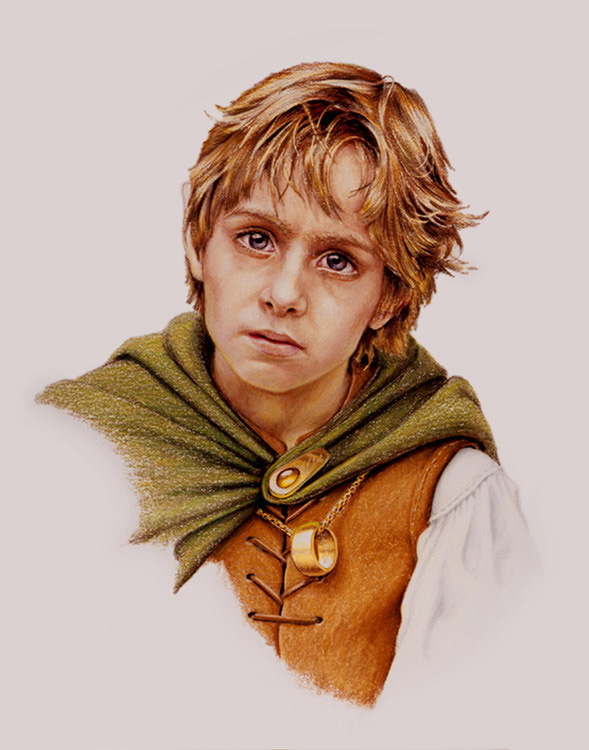
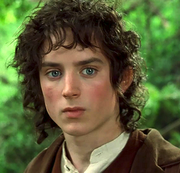

Frodo Baggins
herói moderno numa epopeia clássicaFrodo Bolseiro (no original: Frodo Baggins) ou Frodo Underhill é o personagem principal da obra O Senhor dos Anéis de J. R. R. Tolkien. É também mencionado em O Silmarillion - no anexo "Dos Anéis do Poder e Da Terceira Era". É visto como um herói moderno numa epopeia clássica, com características únicas como sendo "vulnerável, limitado e imprevisível".
Foi um hobbit do Condado que herdou de seu tio Bilbo Bolseiro o Um Anel de Sauron e comprometeu-se à missão de destruí-lo na Montanha da Perdição.
Nesta missão, iniciada a 23 de Setembro do ano de 3018, ele vaga com Gandalf, Boromir, Aragorn, Legolas, Gimli, Merry, Pippin e Samwise Gamgee até Caradhras e adentram em Moria, onde encontram um Balrog, que ao lutar com Gandalf cai nas profundezas da Montanha.
Seguiram até Lothlórien onde Frodo encontra Galadriel e olha em sua fonte, onde vê um enigma que só vem a desvendar mais tarde. Frodo e Samwise se separam do resto da comitiva em Amon Hen indo em direção a Mordor onde deveriam jogar o Um Anel na Montanha da Perdição.
"Existem feridas que vão tão fundo que serão eternas!"
Frodo Bolseiro
- Nascimento: 2968 da 3ª Era do Sol
- Morte: Não se tem notícia do seu falecimento, partiu para Valinor em 3021 da 3ª Era do Sol
- Raça: Hobbit
- Interpretado por: Elijah Wood
São guiados por Gollum e ao entrar em Cirith Ungol são atacados por Laracna (Shelob). Depois Frodo é capturado por orcs, mas Sam o salva e juntos destroem o Um Anel.
No fim da aventura, Frodo - sendo um dos Portadores dos Anéis e graças a um pedido de Arwen Undómiel - pegou o navio élfico que levava Galadriel, Elrond, Gandalf, Bilbo Baggins e outros e partiu para o Antigo Oeste, onde pode ter encontrado alguma paz que acabasse com os efeitos maléficos causados pela posse do Um Anel.